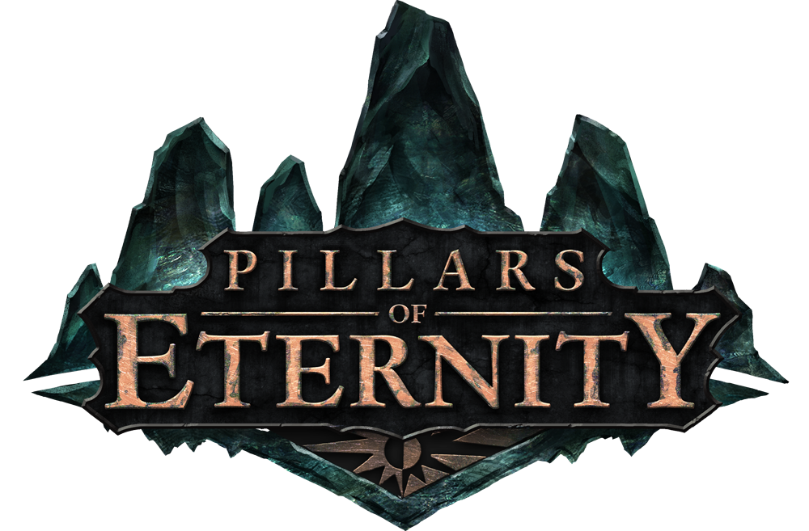

More info
Pillars of Eternity to gra z gatunku cRPG stworzona przez studio
Obsidian Entertainment. Gracz kieruje poczynaniami bohatera, który
razem z dołączanymi do drużyny postaciami niezależnymi przemierza
rozległy, fantastyczny świat. Produkcja powstała przy wsparciu finansowym
społeczności skupionej wokół platformy Kickstarter, a w prace
zaangażowani zostali m.in. twórcy serii Baldur's Gate, Icewind Dale oraz
Fallout.

More info
Fable: The Lost Chapters to cRPG, na który PeCetowi gracze czekali od
dawna i który powstał w oparciu o pierwowzór rodem z Xboxa, Fable.
Developingu gry również w tym wypadku podjęli się ludzie z Lionhead
Studios, dodając w wersji na komputery osobiste m.in. nowe zadania,
potwory lokacje, części fabuły, opcjonalne misje, zaklęcia, zbroje i bronie, optymizując grafikę oraz zwiększając możliwości dostosowywania zachowań naszej postaci do życia.
More info
Wiedźmin jest produkcją typu cRPG, stworzoną przez polskie studio
CD Projekt RED. Tytuł został oparty na słynnej książkowej sadze fantasy
Andrzeja Sapkowskiego, opowiadającej historię Geralta z Rivii,
profesjonalnego zabójcy potworów. Znajomość pierwowzoru nie jest jednak konieczna, by cieszyć się zabawą. Fabuła gry skupia się na wydarzeniach rozgrywających się po zakończeniu powieści. Dodatkowo, główny bohater niefortunnie został dotknięty amnezją, przez co najważniejsze nawiązania
do książek są na bieżąco tłumaczone.


 7 BEST GAMES
7 BEST GAMES